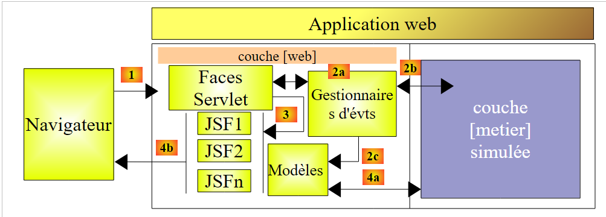
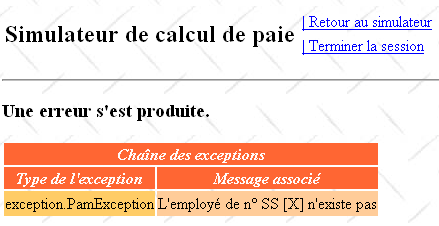
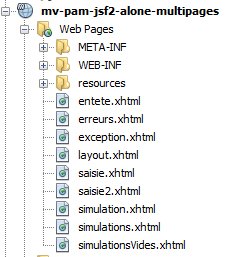
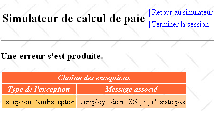
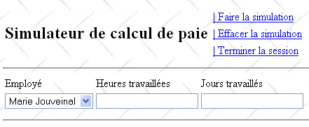

12. Versie 7 - Webapplicatie PAM met meerdere weergaven / meerdere pagina’s
We keren hier terug naar de oorspronkelijke architectuur waarin de laag [métier] werd gesimuleerd. We weten nu dat deze eenvoudig kan worden vervangen door de daadwerkelijke laag [métier]. De gesimuleerde laag [métier] vergemakkelijkt het testen.
 |
Een applicatie JSF is van het type MVC (Model-View-Controller):
- de servlet [Faces Servlet] is de generieke controller die door JSF wordt geleverd. Deze controller wordt uitgebreid door de toepassingsspecifieke gebeurtenishandlers. De gebeurtenishandlers die we tot nu toe zijn tegengekomen, waren methoden van de klassen die als sjablonen dienen voor de pagina's JSF
- De pagina's JSF sturen de antwoorden naar de clientbrowser. Dit zijn de weergaven van de applicatie.
- De pagina's JSF bevatten dynamische elementen die het paginamodel worden genoemd. Ter herinnering: voor sommige auteurs omvat het model de entiteiten die door de applicatie worden beheerd, zoals bijvoorbeeld de klassen FeuilleSalaire of Employe. Om deze twee modellen van elkaar te onderscheiden, kan men spreken van het applicatiemodel en het model van een pagina JSF.
In de architectuur JSF kan de overgang van een pagina JSFi naar een pagina JSFj problematisch zijn.
- De pagina JSFi is weergegeven. Vanuit deze pagina roept de gebruiker een POST op via een willekeurige gebeurtenis [1]
- in JSF; deze POST wordt doorgaans verwerkt door een C-methode van het Mi-model van de pagina JSFi. Men kan stellen dat de C-methode een secundaire controller is.
- Als aan het einde van deze methode de pagina JSFj moet worden weergegeven, moet controller C:
- [2c], het Mj-model van de pagina JSFj, bijwerken
- [2a] teruggeven aan de hoofdcontroller, de navigatiesleutel waarmee de pagina JSFj kan worden weergegeven
Stap 1 vereist dat het Mi-sjabloon van de pagina JSFi een verwijzing bevat naar het Mj-sjabloon van de pagina JSFj. Dit maakt de zaken iets ingewikkelder, omdat de Mi-sjablonen hierdoor van elkaar afhankelijk worden. De C-beheerder van het Mi-sjabloon die het Mj-sjabloon bijwerkt, moet dit namelijk kennen. Als het model Mj moet worden gewijzigd, moet ook de C-beheerder van het Mi-model worden aangepast.
Er is één geval waarin de onderlinge afhankelijkheid van de modellen kan worden vermeden: wanneer er één enkel M-model is dat voor alle JSF-pagina's wordt gebruikt. Deze architectuur is alleen bruikbaar in applicaties met slechts enkele weergaven, maar blijkt dan wel zeer eenvoudig in het gebruik. Dit is de architectuur die we nu gebruiken.
In deze context is de architectuur van de applicatie als volgt:
 |
12.1. De weergaven van de applicatie
De verschillende weergaven die aan de gebruiker worden getoond, zijn de volgende:
-
de weergave [VueSaisies], die het simulatieformulier toont
-
de weergave [VueSimulation], die wordt gebruikt om het gedetailleerde resultaat van de simulatie weer te geven:


- de weergave [VueSimulations], die de lijst met door de klant uitgevoerde simulaties toont

- de weergave [VueSimulationsVides], die aangeeft dat de klant geen of geen simulaties meer heeft:

- de weergave [VueErreur] die een of meerdere fouten aangeeft:

12.2. Het NetBeans-project van de laag [web]
Het NetBeans-project van deze versie wordt het volgende Maven-project:
 |
- in [1], de configuratiebestanden,
- in [2], de pagina's JSF,
- in [3], het stylesheet en de achtergrondafbeelding van de weergaven,
- in [4], de klassen van de laag [web],
- in [5], de onderste lagen van de applicatie,
- in [6], het berichtenbestand voor de internationalisering van de applicatie,
- in [7], de afhankelijkheden van het project.
We zullen enkele van deze elementen nader bekijken.
12.2.1. De configuratiebestanden
De bestanden [web.xml] en [faces-config.xml] zijn identiek aan die van het vorige project, met uitzondering van één detail in [web.xml]:
<?xml version="1.0" encoding="UTF-8"?>
<web-app version="3.0" xmlns="http://java.sun.com/xml/ns/javaee" xmlns:xsi="http://www.w3.org/2001/XMLSchema-instance" xsi:schemaLocation="http://java.sun.com/xml/ns/javaee http://java.sun.com/xml/ns/javaee/web-app_3_0.xsd">
...
<welcome-file-list>
<welcome-file>faces/saisie.xhtml</welcome-file>
</welcome-file-list>
...
</web-app>
- regels 4-6: de startpagina is de pagina [saisie.xhtml]
12.2.2. Het stylesheet
Het bestand [styles.css] ziet er als volgt uit:
.simulationsHeader {
text-align: center;
font-style: italic;
color: Snow;
background: Teal;
}
.simuNum {
height: 25px;
text-align: center;
background: MediumTurquoise;
}
.simuNom {
text-align: left;
background: PowderBlue;
}
.simuPrenom {
width: 6em;
text-align: left;
color: Black;
background: MediumTurquoise;
}
.simuHT {
width: 3em;
text-align: center;
color: Black;
background: PowderBlue;
}
.simuJT {
width: 3em;
text-align: center;
color: Black;
background: MediumTurquoise;
}
.simuSalaireBase {
width: 9em;
text-align: center;
color: Black;
background: PowderBlue;
}
.simuIndemnites {
width: 3em;
text-align: center;
color: Black;
background: MediumTurquoise;
}
.simuCotisationsSociales {
width: 6em;
text-align: center;
background: PowderBlue;
}
.simuSalaireNet {
width: 10em;
text-align: center;
background: MediumTurquoise;
}
.erreursHeaders {
background: Teal;
background-color: #ff6633;
color: Snow;
font-style: italic;
text-align: center
}
.erreurClasse {
background: MediumTurquoise;
background-color: #ffcc66;
height: 25px;
text-align: center
}
.erreurMessage {
background: PowderBlue;
background-color: #ffcc99;
text-align: left
}
Hier volgen enkele voorbeelden van JSF-code waarin deze stijlen worden gebruikt:
Weergave Simulaties
<h:dataTable value="#{form.simulations}" var="simulation"
headerClass="simulationsHeaders" columnClasses="simuNum,simuNom,simuPrenom,simuHT,simuJT,simuSalaireBase,simuIndemnites,simuCotisationsSociales,simuSalaireNet">
Het resultaat is als volgt:

Foutweergave
<h:dataTable value="#{form.erreurs}" var="erreur"
headerClass="erreursHeaders" columnClasses="erreurClasse,erreurMessage">

12.2.3. Het berichtenbestand
Het berichtenbestand [messages_fr.properties] ziet er als volgt uit:
form.titre=Simulateur de calcul de paie
form.comboEmployes.libell\u00e9=Employ\u00e9
form.heuresTravaill\u00e9es.libell\u00e9=Heures travaill\u00e9es
form.joursTravaill\u00e9s.libell\u00e9=Jours travaill\u00e9s
form.heuresTravaill\u00e9es.required=Indiquez le nombre d'heures travaill\u00e9es
form.heuresTravaill\u00e9es.validation=Donn\u00e9e incorrecte
form.joursTravaill\u00e9s.required=Indiquez le nombre de jours travaill\u00e9s
form.joursTravaill\u00e9s.validation=Donn\u00e9e incorrecte
form.btnSalaire.libell\u00e9=Salaire
form.btnRaz.libell\u00e9=Raz
exception.header=L'exception suivante s'est produite
exception.httpCode=Code HTTP de l'erreur
exception.message=Message de l'exception
exception.requestUri=Url demand\u00e9e lors de l'erreur
exception.servletName=Nom de la servlet demand\u00e9e lorsque l'erreur s'est produite
form.infos.employ\u00e9=Informations Employ\u00e9
form.employe.nom=Nom
form.employe.pr\u00e9nom=Pr\u00e9nom
form.employe.adresse=Adresse
form.employe.ville=Ville
form.employe.codePostal=Code postal
form.employe.indice=Indice
form.infos.cotisations=Informations Cotisations sociales
form.cotisations.csgrds=CSGRDS
form.cotisations.csgd=CSGD
form.cotisations.retraite=Retraite
form.cotisations.secu=S\u00e9curit\u00e9 sociale
form.infos.indemnites=Informations Indemnit\u00e9s
form.indemnites.salaireHoraire=Salaire horaire
form.indemnites.entretienJour=Entretien / Jour
form.indemnites.repasJour=Repas / Jour
form.indemnites.cong\u00e9sPay\u00e9s=Cong\u00e9s pay\u00e9s
form.infos.salaire=Informations Salaire
form.salaire.base=Salaire de base
form.salaire.cotisationsSociales=Cotisations sociales
form.salaire.entretien=Indemnit\u00e9s d'entretien
form.salaire.repas=Indemnit\u00e9s de repas
form.salaire.net=Salaire net
form.menu.faireSimulation=| Faire la simulation
form.menu.effacerSimulation=| Effacer la simulation
form.menu.enregistrerSimulation=| Enregistrer la simulation
form.menu.retourSimulateur=| Retour au simulateur
form.menu.voirSimulations=| Voir les simulations
form.menu.terminerSession=| Terminer la session
simulations.headers.nom=Nom
simulations.headers.nom=Nom
simulations.headers.prenom=Pr\u00e9nom
simulations.headers.heuresTravaillees=Heures travaill\u00e9es
simulations.headers.joursTravailles=Jours Travaill\u00e9s
simulations.headers.salaireBase=Salaire de base
simulations.headers.indemnites=Indemnit\u00e9s
simulations.headers.cotisationsSociales=Cotisations sociales
simulations.headers.salaireNet=SalaireNet
simulations.headers.numero=N\u00b0
erreur.titre=Une erreur s'est produite.
erreur.exceptions=Cha\u00eene des exceptions
exception.type=Type de l'exception
exception.message=Message associ\u00e9
12.2.4. De laag [métier]
De gesimuleerde laag [métier] wordt als volgt gewijzigd:
package metier;
...
public class Metier implements ImetierLocal, Serializable {
// lijst van werknemers
private Map<String,Employe> hashEmployes=new HashMap<String,Employe>();
private List<Employe> listEmployes;
// loonstrook opvragen
public FeuilleSalaire calculerFeuilleSalaire(String SS,
double nbHeuresTravaillées, int nbJoursTravaillés) {
// de werknemer ophalen
Employe e=hashEmployes.get(SS);
// er wordt een uitzondering gegenereerd als de werknemer niet bestaat
if(e==null){
throw new PamException(String.format("L'employé de n° SS [%s] n'existe pas",SS),1);
}
// een fictieve loonstrook genereren
return new FeuilleSalaire(e,new Cotisation(3.49,6.15,9.39,7.88),e.getIndemnite(),new ElementsSalaire(100,100,100,100,100));
}
// lijst met werknemers
public List<Employe> findAllEmployes() {
if(listEmployes==null){
// er wordt een lijst met drie werknemers aangemaakt
listEmployes=new ArrayList<Employe>();
listEmployes.add(new Employe("254104940426058","Jouveinal","Marie","5 rue des oiseaux","St Corentin","49203",new Indemnite(2,2.1,2.1,3.1,15)));
listEmployes.add(new Employe("260124402111742","Laverti","Justine","La brûlerie","St Marcel","49014",new Indemnite(1,1.93,2,3,12)));
// werknemersregister
for(Employe e:listEmployes){
hashEmployes.put(e.getSS(),e);
}
// een werknemer toevoegen die niet in het werknemersregister voorkomt
listEmployes.add(new Employe("X","Y","Z","La brûlerie","St Marcel","49014",new Indemnite(1,1.93,2,3,12)));
}
// de lijst met medewerkers wordt weergegeven
return listEmployes;
}
}
- regel 8: de lijst met medewerkers
- regel 7: dezelfde lijst in de vorm van een woordenboek, geïndexeerd op het nummer SS van de werknemers
- regels 24-39: de methode findAllEmployes die de lijst met medewerkers weergeeft. Deze methode maakt een vaste lijst aan en verwijst naar het veld employés uit regel 8.
- regels 27-33: er worden een lijst en een woordenboek met twee medewerkers aangemaakt
- regel 35: een medewerker wordt toegevoegd aan de lijst met medewerkers (regel 8), maar niet aan het woordenboek hashEmployes (regel 7). Dit is bedoeld om ervoor te zorgen dat hij in de keuzelijst met medewerkers verschijnt, maar vervolgens niet wordt herkend door de methode calculerFeuilleSalaire (regel 14), zodat deze een uitzondering genereert (regel 17).
- regels 11-21: de methode calculerFeuilleSalaire
- regel 14: de medewerker wordt opgezocht in het woordenboek hashEmployes aan de hand van zijn nummer SS. Als hij niet wordt gevonden, wordt er een uitzondering gegenereerd (regels 16-18). Zo krijgen we een uitzondering voor de werknemer met nummer SS X, die op regel 35 aan de werknemerslijst is toegevoegd, maar niet in het woordenboek hashEmployes voorkomt.
- Op regel 20 wordt een fictieve loonstrook aangemaakt en weergegeven.
12.3. De beans van de applicatie
Er zijn drie beans met drie verschillende bereikgebieden:
 |
12.3.1. De bean ApplicationData
De bean ApplicationData heeft het bereik application:
package web.beans.application;
import java.io.Serializable;
import java.util.logging.Logger;
import javax.annotation.PostConstruct;
import javax.enterprise.context.ApplicationScoped;
import javax.inject.Named;
import metier.IMetierLocal;
import metier.Metier;
@Named
@ApplicationScoped
public class ApplicationData implements Serializable {
// bedrijfslaag
private IMetierLocal metier = new Metier();
// logboek
private boolean logsEnabled = true;
private final Logger logger = Logger.getLogger("pam");
public ApplicationData() {
}
@PostConstruct
public void init() {
// log
if (isLogsEnabled()) {
logger.info("ApplicationData");
}
}
// getters en setters
...
}
- regel 11: de annotatie @Named maakt van de klasse een beheerde bean. Merk op dat, in tegenstelling tot het vorige project, de annotatie @ManagedBean niet is gebruikt. De reden hiervoor is dat de referentie van deze klasse met behulp van de annotatie @Inject in een andere klasse moet worden geïnjecteerd en dat deze annotatie alleen klassen met de annotatie @Named injecteert.
- regel 12: de annotatie @ApplicationScoped maakt van de klasse een object met applicatiebereik. Merk op dat de klasse van de annotatie [javax.enterprise.context.ApplicationScoped] is (regel 6) en niet [javax.faces.bean.ApplicationScoped] zoals in de beans van het vorige project.
De bean ApplicationData dient twee doelen:
- regel 16: het bijhouden van een verwijzing naar de laag [métier],
- regels 18-19: het definiëren van een logger die door de andere beans kan worden gebruikt om logs op de GlassFish-console te genereren.
12.3.2. De bean SessionData
De bean SessionData heeft een sessiebereik:
package web.beans.session;
import java.io.Serializable;
import java.util.ArrayList;
import java.util.List;
import javax.annotation.PostConstruct;
import javax.enterprise.context.SessionScoped;
import javax.inject.Inject;
import javax.inject.Named;
import web.beans.application.ApplicationData;
import web.entities.Simulation;
@Named
@SessionScoped
public class SessionData implements Serializable {
// toepassing
@Inject
private ApplicationData applicationData;
// simulaties
private List<Simulation> simulations = new ArrayList<Simulation>();
private int numDerniereSimulation = 0;
private Simulation simulation;
// menu's
private boolean menuFaireSimulationIsRendered = true;
private boolean menuEffacerSimulationIsRendered = true;
private boolean menuEnregistrerSimulationIsRendered;
private boolean menuVoirSimulationsIsRendered;
private boolean menuRetourSimulateurIsRendered;
private boolean menuTerminerSessionIsRendered = true;
// lokale instellingen
private String locale="fr_FR";
// constructor
public SessionData() {
}
@PostConstruct
public void init() {
// logboek
if (applicationData.isLogsEnabled()) {
applicationData.getLogger().info("SessionData");
}
}
// menu-beheer
public void setMenu(boolean menuFaireSimulationIsRendered, boolean menuEnregistrerSimulationIsRendered, boolean menuEffacerSimulationIsRendered, boolean menuVoirSimulationsIsRendered, boolean menuRetourSimulateurIsRendered, boolean menuTerminerSessionIsRendered) {
this.setMenuFaireSimulationIsRendered(menuFaireSimulationIsRendered);
this.setMenuEnregistrerSimulationIsRendered(menuEnregistrerSimulationIsRendered);
this.setMenuVoirSimulationsIsRendered(menuVoirSimulationsIsRendered);
this.setMenuEffacerSimulationIsRendered(menuEffacerSimulationIsRendered);
this.setMenuRetourSimulateurIsRendered(menuRetourSimulateurIsRendered);
this.setMenuTerminerSessionIsRendered(menuTerminerSessionIsRendered);
}
// getters en setters
...
}
- regel 13: de klasse SessionData is een beheerde bean (@Named) die in andere beheerde beans kan worden geïnjecteerd,
- regel 14: deze heeft een sessiebereik (@SessionScoped),
- regels 18-19: er wordt een verwijzing naar de bean ApplicationData in geïnjecteerd (@Inject),
- regels 21-32: de applicatiegegevens die gedurende de sessies behouden moeten blijven.
- regel 21: de lijst met simulaties die door de gebruiker zijn uitgevoerd,
- regel 22: het nummer van de laatst opgeslagen simulatie,
- regel 23: de laatste simulatie die is uitgevoerd,
- regels 25-30: de menuopties,
- regel 32: de landinstelling van de toepassing.
Regels 39-44: de methode init wordt uitgevoerd na het instantiëren van de klasse (@PostConstruct). Hier wordt deze methode alleen gebruikt om een spoor van de uitvoering achter te laten. We moeten kunnen controleren of deze methode slechts één keer per gebruiker wordt uitgevoerd, aangezien de klasse een sessiebereik heeft. Regel 42: de methode maakt gebruik van de logger die is gedefinieerd in de klasse ApplicationData. Daarom was het nodig om een verwijzing naar deze bean te injecteren (regels 18-19).
12.3.3. De Form-bean
De Form-bean heeft het bereik requête:
package web.beans.request;
import java.util.ArrayList;
import java.util.List;
import javax.enterprise.context.RequestScoped;
import javax.faces.context.FacesContext;
import javax.inject.Inject;
import javax.inject.Named;
import javax.servlet.http.HttpServletRequest;
import jpa.Employe;
import metier.FeuilleSalaire;
import web.beans.application.ApplicationData;
import web.beans.session.*;
import web.entities.Erreur;
import web.entities.Simulation;
@Named
@RequestScoped
public class Form {
public Form() {
}
// andere beans
@Inject
private ApplicationData applicationData;
@Inject
private SessionData sessionData;
// het view-model
private String comboEmployesValue = "";
private String heuresTravaillées = "";
private String joursTravaillés = "";
private Integer numSimulationToDelete;
private List<Erreur> erreurs = new ArrayList<Erreur>();
private FeuilleSalaire feuilleSalaire;
// lijst met medewerkers
public List<Employe> getEmployes(){
return applicationData.getMetier().findAllEmployes();
}
// menuactie
public String faireSimulation() {
...
}
public String enregistrerSimulation() {
...
}
public String effacerSimulation() {
...
}
public String voirSimulations() {
...
}
public String retourSimulateur() {
...
}
public String terminerSession() {
...
}
public String retirerSimulation() {
...
}
private void razFormulaire() {
...
}
// getters en setters
...
}
- regel 17: de klasse is een beheerde bean (@Named),
- regel 18, met een request-bereik (@RequestScoped),
- regels 24-25: injectie van een verwijzing naar de bean met applicatiebereik ApplicationData,
- regels 26-27: injectie van een verwijzing naar de bean met sessiebereik SessionData.
12.4. De pagina's van de applicatie
 |
12.4.1. [layout.xhtml]
De pagina [layout.xhtml] zorgt voor de opmaak van alle weergaven:
<?xml version='1.0' encoding='UTF-8' ?>
<!DOCTYPE html PUBLIC "-//W3C//DTD XHTML 1.0 Transitional//EN" "http://www.w3.org/TR/xhtml1/DTD/xhtml1-transitional.dtd">
<html xmlns="http://www.w3.org/1999/xhtml"
xmlns:h="http://java.sun.com/jsf/html"
xmlns:f="http://java.sun.com/jsf/core"
xmlns:ui="http://java.sun.com/jsf/facelets">
<f:view locale="#{sessionData.locale}">
<h:head>
<title><h:outputText value="#{msg['form.titre']}"/></title>
<h:outputStylesheet library="css" name="styles.css"/>
</h:head>
<script type="text/javascript">
function raz(){
// de verzonden waarden worden gewijzigd
document.forms['formulaire'].elements['formulaire:comboEmployes'].value="0";
document.forms['formulaire'].elements['formulaire:heuresTravaillees'].value="0";
document.forms['formulaire'].elements['formulaire:joursTravailles'].value="0";
}
</script>
<h:body style="background-image: url('${request.contextPath}/resources/images/standard.jpg');">
<h:form id="formulaire">
<!-- koptekst -->
<ui:include src="entete.xhtml" />
<!-- inhoud -->
<ui:insert name="part1" >
Gestion des assistantes maternelles
</ui:insert>
<ui:insert name="part2"/>
</h:form>
</h:body>
</f:view>
</html>
Elke weergave bestaat uit de volgende elementen:
- een koptekst die wordt weergegeven door het fragment [entete.xhtml] (regel 24),
- een hoofdtekst die bestaat uit twee fragmenten, genaamd part1 (regels 26-28) en part2 (regel 29),
- regel 8: het attribuut locale zorgt voor de internationalisering van de pagina's. Hier is er slechts één: fr_FR,
- regels 14-19: een JavaScript-code.
De weergave van de pagina [layout.xhtml] is als volgt:
 |
- in [1], de koptekst [entete.xhtml],
- in [2], het fragment part1.
12.4.2. De header [entete.xhtml]
De code van de pagina [entete.xhtml] is als volgt:
<?xml version='1.0' encoding='UTF-8' ?>
<!DOCTYPE html PUBLIC "-//W3C//DTD XHTML 1.0 Transitional//EN" "http://www.w3.org/TR/xhtml1/DTD/xhtml1-transitional.dtd">
<html xmlns="http://www.w3.org/1999/xhtml"
xmlns:h="http://java.sun.com/jsf/html"
xmlns:f="http://java.sun.com/jsf/core"
xmlns:ui="http://java.sun.com/jsf/facelets">
<ui:composition>
<!-- koptekst -->
<h:panelGrid columns="2">
<h:panelGroup>
<h2><h:outputText value="#{msg['form.titre']}"/></h2>
</h:panelGroup>
<h:panelGroup>
<h:panelGrid columns="1">
<h:commandLink id="cmdFaireSimulation" value="#{msg['form.menu.faireSimulation']}" action="#{form.faireSimulation}" rendered="#{sessionData.menuFaireSimulationIsRendered}"/>
<h:commandLink id="cmdEffacerSimulation" onclick="raz()" value="#{msg['form.menu.effacerSimulation']}" action="#{form.effacerSimulation}" rendered="#{sessionData.menuEffacerSimulationIsRendered}"/>
<h:commandLink id="cmdEnregistrerSimulation" immediate="true" value="#{msg['form.menu.enregistrerSimulation']}" action="#{form.enregistrerSimulation}" rendered="#{sessionData.menuEnregistrerSimulationIsRendered}"/>
<h:commandLink id="cmdVoirSimulations" immediate="true" value="#{msg['form.menu.voirSimulations']}" action="#{form.voirSimulations}" rendered="#{sessionData.menuVoirSimulationsIsRendered}"/>
<h:commandLink id="cmdRetourSimulateur" immediate="true" value="#{msg['form.menu.retourSimulateur']}" action="#{form.retourSimulateur}" rendered="#{sessionData.menuRetourSimulateurIsRendered}"/>
<h:commandLink id="cmdTerminerSession" immediate="true" value="#{msg['form.menu.terminerSession']}" action="#{form.terminerSession}" rendered="#{sessionData.menuTerminerSessionIsRendered}"/>
</h:panelGrid>
</h:panelGroup>
</h:panelGrid>
<hr/>
</ui:composition>
</html>
- regel 12: de titel van de applicatie,
- regels 16-21: de zes links die overeenkomen met de zes acties die de gebruiker kan uitvoeren. Deze links worden aangestuurd (attribuut `rendered`) door booleaanse waarden van de bean SessionData,
- regel 17: een klik op de link [Effacer la simulation] zorgt ervoor dat de JavaScript-functie raz wordt uitgevoerd. Deze is gedefinieerd in het model [layout.xhtml],
- regel 18: het attribuut `immediate=true` zorgt ervoor dat de geldigheid van de gegevens niet wordt gecontroleerd vóór de uitvoering van de methode `[Form].enregistrerSimulation`. Dit is de bedoeling. Het kan wenselijk zijn om de laatste simulatie die een minuut geleden is uitgevoerd op te slaan, zelfs als de gegevens die sindsdien in het formulier zijn ingevoerd (maar nog niet zijn gevalideerd) ongeldig zijn. Hetzelfde geldt voor de acties [Voir les simulations], [Effacer la simulation], [Retour au simulateur] en [Terminer la session].
12.5. Toepassingsgevallen van de applicatie
12.5.1. De startpagina weergeven
De startpagina is de volgende pagina: [saisie.xhtml]:
<?xml version='1.0' encoding='UTF-8' ?>
<!DOCTYPE html PUBLIC "-//W3C//DTD XHTML 1.0 Transitional//EN" "http://www.w3.org/TR/xhtml1/DTD/xhtml1-transitional.dtd">
<html xmlns="http://www.w3.org/1999/xhtml"
xmlns:h="http://java.sun.com/jsf/html"
xmlns:f="http://java.sun.com/jsf/core"
xmlns:ui="http://java.sun.com/jsf/facelets">
<ui:composition template="layout.xhtml">
<ui:define name="part1">
<ui:include src="saisie2.xhtml"/>
</ui:define>
</ui:composition>
</html>
- regel 8: deze wordt weergegeven binnen de pagina [layout.xhtml],
- regel 9: op de plaats van het fragment met de naam part1. In dit fragment wordt de pagina [saisie2.xhtml] weergegeven:
<?xml version='1.0' encoding='UTF-8' ?>
<!DOCTYPE html PUBLIC "-//W3C//DTD XHTML 1.0 Transitional//EN" "http://www.w3.org/TR/xhtml1/DTD/xhtml1-transitional.dtd">
<html xmlns="http://www.w3.org/1999/xhtml"
xmlns:h="http://java.sun.com/jsf/html"
xmlns:f="http://java.sun.com/jsf/core"
xmlns:ui="http://java.sun.com/jsf/facelets">
<h:panelGrid columns="3">
<h:outputText value="#{msg['form.comboEmployes.libellé']}"/>
<h:outputText value="#{msg['form.heuresTravaillées.libellé']}"/>
<h:outputText value="#{msg['form.joursTravaillés.libellé']}"/>
<h:selectOneMenu id="comboEmployes" value="#{form.comboEmployesValue}">
<f:selectItems .../>
</h:selectOneMenu>
<h:inputText id="heuresTravaillees" value="#{form.heuresTravaillées}" required="true" requiredMessage="#{msg['form.heuresTravaillées.required']}" validatorMessage="#{msg['form.heuresTravaillées.validation']}">
<f:validateDoubleRange minimum="0" maximum="300"/>
</h:inputText>
<h:inputText id="joursTravailles" value="#{form.joursTravaillés}" required="true" requiredMessage="#{msg['form.joursTravaillés.required']}" validatorMessage="#{msg['form.joursTravaillés.validation']}">
<f:validateLongRange minimum="0" maximum="31"/>
</h:inputText>
<h:panelGroup></h:panelGroup>
<h:message for="heuresTravaillees" styleClass="error"/>
<h:message for="joursTravailles" styleClass="error"/>
</h:panelGrid>
<hr/>
</html>
Deze code geeft de volgende weergave weer:
 |
Vraag: vul regel 13 van de code XHTML aan. De lijst met elementen van de combobox voor medewerkers wordt geleverd door een methode van de bean [Form]. Schrijf deze methode. De elementen die in de keuzelijst worden weergegeven, hebben de eigenschap itemValue gelijk aan het nummer SS van een medewerker en de eigenschap itemLabel is een tekenreeks die bestaat uit de voor- en achternaam van die medewerker.
Vraag: hoe moet de bean [SessionData] worden geïnitialiseerd, zodat bij de eerste aanvraag van GET aan het formulier het koptekstmenu wordt weergegeven zoals hierboven?
12.5.2. De actie [faireSimulation]
De code JSF van de actie [faireSimulation] is als volgt:
<h:commandLink id="cmdFaireSimulation" value="#{msg['form.menu.faireSimulation']}" action="#{form.faireSimulation}" rendered="#{sessionData.menuFaireSimulationIsRendered}"/>
De actie [faireSimulation] berekent een loonstrook:

Op basis van de vorige pagina krijgen we het volgende resultaat:
 |
 |
De simulatie wordt weergegeven op de volgende pagina [simulation.xhtml]:
<?xml version='1.0' encoding='UTF-8' ?>
<!DOCTYPE html PUBLIC "-//W3C//DTD XHTML 1.0 Transitional//EN" "http://www.w3.org/TR/xhtml1/DTD/xhtml1-transitional.dtd">
<html xmlns="http://www.w3.org/1999/xhtml"
xmlns:h="http://java.sun.com/jsf/html"
xmlns:f="http://java.sun.com/jsf/core"
xmlns:ui="http://java.sun.com/jsf/facelets">
<ui:composition template="layout.xhtml">
<ui:define name="part1">
<ui:include src="saisie2.xhtml"/>
</ui:define>
<ui:define name="part2">
<h:outputText value="#{msg['form.infos.employé']}" styleClass="titreInfos"/>
<br/><br/>
<h:panelGrid columns="3" rowClasses="libelle,info">
<h:outputText value="#{msg['form.employe.nom']}"/>
<h:outputText value="#{msg['form.employe.prénom']}"/>
<h:outputText value="#{msg['form.employe.adresse']}"/>
<h:outputText value="#{form.feuilleSalaire.employe.nom}"/>
<h:outputText value="#{form.feuilleSalaire.employe.prenom}"/>
<h:outputText value="#{form.feuilleSalaire.employe.adresse}"/>
</h:panelGrid>
<h:panelGrid columns="3" rowClasses="libelle,info">
<h:outputText value="#{msg['form.employe.ville']}"/>
<h:outputText value="#{msg['form.employe.codePostal']}"/>
<h:outputText value="#{msg['form.employe.indice']}"/>
<h:outputText value="#{form.feuilleSalaire.employe.ville}"/>
<h:outputText value="#{form.feuilleSalaire.employe.codePostal}"/>
<h:outputText value="#{form.feuilleSalaire.employe.indemnite.indice}"/>
</h:panelGrid>
<br/>
<h:outputText value="#{msg['form.infos.cotisations']}" styleClass="titreInfos"/>
<br/><br/>
<h:panelGrid columns="4" rowClasses="libelle,info">
<h:outputText value="#{msg['form.cotisations.csgrds']}"/>
<h:outputText value="#{msg['form.cotisations.csgd']}"/>
<h:outputText value="#{msg['form.cotisations.retraite']}"/>
<h:outputText value="#{msg['form.cotisations.secu']}"/>
<h:outputText value="#{form.feuilleSalaire.cotisation.csgrds} %"/>
<h:outputText value="#{form.feuilleSalaire.cotisation.csgd} %"/>
<h:outputText value="#{form.feuilleSalaire.cotisation.retraite} %"/>
<h:outputText value="#{form.feuilleSalaire.cotisation.secu} %"/>
</h:panelGrid>
<br/>
<h:outputText value="#{msg['form.infos.indemnites']}" styleClass="titreInfos"/>
<br/><br/>
<h:panelGrid columns="4" rowClasses="libelle,info">
<h:outputText value="#{msg['form.indemnites.salaireHoraire']}"/>
<h:outputText value="#{msg['form.indemnites.entretienJour']}"/>
<h:outputText value="#{msg['form.indemnites.repasJour']}"/>
<h:outputText value="#{msg['form.indemnites.congésPayés']}"/>
<h:outputFormat value="{0,number,currency}">
<f:param value="#{form.feuilleSalaire.employe.indemnite.baseHeure}"/>
</h:outputFormat>
<h:outputFormat value="{0,number,currency}">
<f:param value="#{form.feuilleSalaire.employe.indemnite.entretienJour}"/>
</h:outputFormat>
<h:outputFormat value="{0,number,currency}">
<f:param value="#{form.feuilleSalaire.employe.indemnite.repasJour}"/>
</h:outputFormat>
<h:outputText value="#{form.feuilleSalaire.employe.indemnite.indemnitesCP} %"/>
</h:panelGrid>
<br/>
<h:outputText value="#{msg['form.infos.salaire']}" styleClass="titreInfos"/>
<br/><br/>
<h:panelGrid columns="4" rowClasses="libelle,info">
<h:outputText value="#{msg['form.salaire.base']}"/>
<h:outputText value="#{msg['form.salaire.cotisationsSociales']}"/>
<h:outputText value="#{msg['form.salaire.entretien']}"/>
<h:outputText value="#{msg['form.salaire.repas']}"/>
<h:outputFormat value="{0,number,currency}">
<f:param value="#{form.feuilleSalaire.elementsSalaire.salaireBase}"/>
</h:outputFormat>
<h:outputFormat value="{0,number,currency}">
<f:param value="#{form.feuilleSalaire.elementsSalaire.cotisationsSociales}"/>
</h:outputFormat>
<h:outputFormat value="{0,number,currency}">
<f:param value="#{form.feuilleSalaire.elementsSalaire.indemnitesEntretien}"/>
</h:outputFormat>
<h:outputFormat value="{0,number,currency}">
<f:param value="#{form.feuilleSalaire.elementsSalaire.indemnitesRepas}"/>
</h:outputFormat>
</h:panelGrid>
<br/>
<h:panelGrid columns="3" columnClasses="libelle,col2,info">
<h:outputText value="#{msg['form.salaire.net']}"/>
<h:panelGroup></h:panelGroup>
<h:outputFormat value="{0,number,currency}">
<f:param value="#{form.feuilleSalaire.elementsSalaire.salaireNet}"/>
</h:outputFormat>
</h:panelGrid>
</ui:define>
</ui:composition>
</html>
- regel 8: de pagina [simulation.xhtml] wordt ingevoegd in de pagina [layout.xhtml],
- regels 9-11: het invoerveld wordt weergegeven in het fragment part1 van de lay-outpagina,
- regels 12-91: de simulatie wordt weergegeven in het fragment part2 van de lay-outpagina.
Vraag: schrijf de methode [faireSimulation] van de klasse [Form]. De simulatie wordt opgeslagen in de bean SessionData.
12.5.3. Foutafhandeling
We willen de uitzonderingen die kunnen optreden tijdens het berekenen van een simulatie op de juiste manier kunnen afhandelen. Hiervoor maakt de code van de methode [faireSimulation] gebruik van een try/catch:
// menuactie
public String faireSimulation(){
try{
// de loonlijst wordt berekend
feuilleSalaire= ...
// de simulatie wordt weergegeven
...
// het menu wordt bijgewerkt
...
// de simulatieweergave wordt weergegeven
return "simulation";
}catch(Throwable th){
// de lijst met eerdere fouten wordt gewist
...
// er wordt een nieuwe foutenlijst aangemaakt
...
// de weergave wordt weergegeven vueErreur
...
// het menu wordt bijgewerkt
...
// de foutweergave wordt weergegeven
return "erreurs";
}
}
De lijst met fouten die op regel 15 wordt aangemaakt, is als volgt:
// het sjabloon voor de weergaven
...
private List<Erreur> erreurs=new ArrayList<Erreur>();
...
De klasse Fout is als volgt gedefinieerd:
package web.entities;
public class Erreur {
public Erreur() {
}
// veld
private String classe;
private String message;
// constructor
public Erreur(String classe, String message){
this.setClasse(classe);
this.message=message;
}
// getters en setters
...
}
Fouten worden behandeld als uitzonderingen waarvan de naam van de klasse wordt opgeslagen in het veld 'klasse' en de melding in het veld 'melding'.
De foutenlijst die in de methode [faireSimulation] wordt samengesteld, bestaat uit:
- de oorspronkelijke uitzondering th van het type Throwable die zich heeft voorgedaan,
- de oorzaak daarvan, th.getCause(), indien deze bestaat,
- de oorzaak van de oorzaak h.getCause().getCause(), indien deze bestaat.
- ...
Hier volgt een voorbeeld van een foutenlijst:

Hierboven bestaat de medewerker [Z Y] niet in het medewerkerswoordenboek dat wordt gebruikt door de gesimuleerde laag [métier]. In dit geval genereert de gesimuleerde laag [métier] een uitzondering (regel 6 hieronder):
public FeuilleSalaire calculerFeuilleSalaire(String SS, double nbHeuresTravaillées, int nbJoursTravaillés) {
// de werknemer wordt opgehaald
Employe e=hashEmployes.get(SS);
// er wordt een uitzondering gegenereerd als de medewerker niet bestaat
if(e==null){
throw new PamException(String.format("L'employé de n° SS [%s] n'existe pas",SS),1);
}
...
}
Het resultaat is als volgt:

Deze weergave wordt getoond door de volgende pagina [erreurs.xhtml]:
<?xml version='1.0' encoding='UTF-8' ?>
<!DOCTYPE html PUBLIC "-//W3C//DTD XHTML 1.0 Transitional//EN" "http://www.w3.org/TR/xhtml1/DTD/xhtml1-transitional.dtd">
<html xmlns="http://www.w3.org/1999/xhtml"
xmlns:h="http://java.sun.com/jsf/html"
xmlns:f="http://java.sun.com/jsf/core"
xmlns:ui="http://java.sun.com/jsf/facelets">
<ui:composition template="layout.xhtml">
<ui:define name="part1">
<h3><h:outputText value="#{msg['erreur.titre']}"/></h3>
<h:dataTable value="#{form.erreurs}" var="erreur"
headerClass="erreursHeaders" columnClasses="erreurClasse,erreurMessage">
<f:facet name="header">
<h:outputText value="#{msg['erreur.exceptions']}"/>
</f:facet>
<h:column>
<f:facet name="header">
<h:outputText value="#{msg['exception.type']}"/>
</f:facet>
<h:outputText value="#{erreur.classe}"/>
</h:column>
<h:column>
<f:facet name="header">
<h:outputText value="#{msg['exception.message']}"/>
</f:facet>
<h:outputText value="#{erreur.message}"/>
</h:column>
</h:dataTable>
</ui:define>
</ui:composition>
</html>
Vraag: vul de methode [faireSimulation] aan, zodat bij een uitzondering de weergave [vueErreur] wordt weergegeven.
12.5.4. De actie [effacerSimulation]
Met de actie [effacerSimulation] kan de gebruiker een leeg formulier opvragen:
 |
De code JSF van de link [effacerSimulation] is als volgt:
<h:commandLink id="cmdEffacerSimulation" onclick="raz()" value="#{msg['form.menu.effacerSimulation']}" action="#{form.effacerSimulation}" rendered="#{sessionData.menuEffacerSimulationIsRendered}"/>
Een klik op de link [EffacerSimulation] roept eerst de JavaScript-functie raz() aan. Deze methode is gedefinieerd op de pagina [layout.xhtml]:
<script type="text/javascript">
function raz(){
// de verzonden waarden worden gewijzigd
document.forms['formulaire'].elements['formulaire:comboEmployes'].value="0";
document.forms['formulaire'].elements['formulaire:heuresTravaillees'].value="0";
document.forms['formulaire'].elements['formulaire:joursTravailles'].value="0";
}
</script>
De regels 4-6 wijzigen de verzonden waarden. Merk op dat
- de verzonden waarden geldig zijn, c.a.d, en dat ze de validatietests van de invoervelden heuresTravaillees en joursTravailles zullen doorstaan.
- de functie raz het formulier niet verstuurt. Dit wordt namelijk verstuurd via de koppeling cmdEffacerSimulation. Deze post vindt plaats na uitvoering van de JavaScript-functie raz.
Tijdens de uitvoering van post volgen de verzonden waarden het normale traject: validatie en vervolgens toewijzing aan de velden van het model. Dit zijn de volgende velden in de klasse [Form]:
// het model van de weergaven
private String comboEmployesValue;
private String heuresTravaillées;
private String joursTravaillés;
...
In deze drie velden worden de drie verzonden waarden {"0","0","0"} geplaatst. Zodra deze toewijzing is uitgevoerd, wordt de methode effacerSimulation uitgevoerd.
Vraag: schrijf de methode [effacerSimulation] van de klasse [Form]. Zorg ervoor dat:
-
alleen het invoerveld wordt weergegeven,
-
de keuzelijst op het eerste element is geselecteerd,
-
de invoervelden heuresTravaillees en joursTravailles lege tekenreeksen weergeven.
12.5.5. De actie [enregistrerSimulation]
De code JSF van de koppeling [enregistrerSimulation] is als volgt:
<h:commandLink id="cmdEnregistrerSimulation" immediate="true" value="#{msg['form.menu.enregistrerSimulation']}" action="#{form.enregistrerSimulation}" rendered="#{sessionData.menuEnregistrerSimulationIsRendered}"/>
Met de actie [enregistrerSimulation] die aan de link is gekoppeld, kan de huidige simulatie worden opgeslagen in een lijst met simulaties die wordt bijgehouden in de klasse [SessionData]:
private List<Simulation> simulations=new ArrayList<Simulation>();
De klasse „ -simulatie” is als volgt:
package web.entities;
import metier.FeuilleSalaire;
public class Simulation {
public Simulation() {
}
// velden van een simulatie
private Integer num;
private FeuilleSalaire feuilleSalaire;
private String heuresTravaillées;
private String joursTravaillés;
// constructor
public Simulation(Integer num,String heuresTravaillées, String joursTravaillés, FeuilleSalaire feuilleSalaire){
this.setNum(num);
this.setFeuilleSalaire(feuilleSalaire);
this.setHeuresTravaillées(heuresTravaillées);
this.setJoursTravaillés(joursTravaillés);
}
public double getIndemnites(){
return feuilleSalaire.getElementsSalaire().getIndemnitesEntretien()+ feuilleSalaire.getElementsSalaire().getIndemnitesRepas();
}
// getters en setters
...
}
Met deze klasse kan een door de gebruiker gemaakte simulatie worden opgeslagen:
- regel 11: het nummer van de simulatie,
- regel 12: de loonstrook die is berekend,
- regel 13: het aantal gewerkte uren,
- regel 14: het aantal gewerkte dagen.
Hier volgt een voorbeeld van een record:

Op basis van de vorige pagina krijgen we het volgende resultaat:

Het simulatienummer wordt bij elke nieuwe registratie verhoogd. Het hoort bij de bean SessionData:
// simulaties
private List<Simulation> simulations = new ArrayList<Simulation>();
private int numDerniereSimulation = 0;
private Simulation simulation;
- regel 2: het nummer van de laatst uitgevoerde simulatie.
De methode [enregistrerSimulation] kan als volgt te werk gaan:
- het nummer van de laatste simulatie ophalen uit de bean [SessionData] en dit verhogen,
- de nieuwe simulatie toevoegen aan de lijst met simulaties die wordt bijgehouden door de klasse [SessionData],
- de tabel met simulaties weergeven:
 |
De tabel met simulaties wordt weergegeven door de pagina [simulations.xhtml]:
<?xml version='1.0' encoding='UTF-8' ?>
<!DOCTYPE html PUBLIC "-//W3C//DTD XHTML 1.0 Transitional//EN" "http://www.w3.org/TR/xhtml1/DTD/xhtml1-transitional.dtd">
<html xmlns="http://www.w3.org/1999/xhtml"
xmlns:h="http://java.sun.com/jsf/html"
xmlns:f="http://java.sun.com/jsf/core"
xmlns:ui="http://java.sun.com/jsf/facelets">
<ui:composition template="layout.xhtml">
<ui:define name="part1">
<!-- simulatietabel -->
<h:dataTable value="#{sessionData.simulations}" var="simulation"
headerClass="simulationsHeaders" columnClasses="simuNum,simuNom,simuPrenom,simuHT,simuJT,simuSalaireBase,simuIndemnites,simuCotisationsSociales,simuSalaireNet">
<h:column>
<f:facet name="header">
<h:outputText value="#{msg['simulations.headers.numero']}"/>
</f:facet>
<h:outputText value="#{simulation.num}"/>
</h:column>
<h:column>
<f:facet name="header">
<h:outputText value="#{msg['simulations.headers.nom']}"/>
</f:facet>
<h:outputText value="#{simulation.feuilleSalaire.employe.nom}"/>
</h:column>
<h:column>
<f:facet name="header">
<h:outputText value="#{msg['simulations.headers.prenom']}"/>
</f:facet>
<h:outputText value="#{simulation.feuilleSalaire.employe.prenom}"/>
</h:column>
<h:column>
<f:facet name="header">
<h:outputText value="#{msg['simulations.headers.heuresTravaillees']}"/>
</f:facet>
<h:outputText value="#{simulation.heuresTravaillées}"/>
</h:column>
<h:column>
<f:facet name="header">
<h:outputText value="#{msg['simulations.headers.joursTravailles']}"/>
</f:facet>
<h:outputText value="#{simulation.joursTravaillés}"/>
</h:column>
<h:column>
<f:facet name="header">
<h:outputText value="#{msg['simulations.headers.salaireBase']}"/>
</f:facet>
<h:outputText value="#{simulation.feuilleSalaire.elementsSalaire.salaireBase}"/>
</h:column>
<h:column>
<f:facet name="header">
<h:outputText value="#{msg['simulations.headers.indemnites']}"/>
</f:facet>
<h:outputText value="#{simulation.indemnites}"/>
</h:column>
<h:column>
<f:facet name="header">
<h:outputText value="#{msg['simulations.headers.cotisationsSociales']}"/>
</f:facet>
<h:outputText value="#{simulation.feuilleSalaire.elementsSalaire.cotisationsSociales}"/>
</h:column>
<h:column>
<f:facet name="header">
<h:outputText value="#{msg['simulations.headers.salaireNet']}"/>
</f:facet>
<h:outputText value="#{simulation.feuilleSalaire.elementsSalaire.salaireNet}"/>
</h:column>
<h:column>
<h:commandLink value="Retirer" action="#{form.retirerSimulation}">
<f:setPropertyActionListener target="#{form.numSimulationToDelete}" value="#{simulation.num}"/>
</h:commandLink>
</h:column>
</h:dataTable>
</ui:define>
</ui:composition>
</html>
- regel 8: de pagina [simulations.xhtml] wordt ingevoegd in de pagina [layout.xhtml],
- regel 9, in plaats van het fragment met de naam part1,
- regel 11: de tag <h:dataTable> gebruikt het veld #{sessionData.simulations} als gegevensbron, c.a.d. het volgende veld:
// simulaties
private List<Simulation> simulations;
-
het attribuut var="simulation" stelt de naam vast van de variabele die de huidige simulatie vertegenwoordigt binnen de tag <h:datatable>
-
het attribuut headerClass="simulationsHeaders" bepaalt de stijl van de kolomkoppen van de tabel.
-
het attribuut columnClasses="...." bepaalt de stijl van elke kolom in de tabel
Laten we eens kijken naar een van de kolommen van de tabel en zien hoe deze is opgebouwd:
 |
De code JSF van de kolom Nom is als volgt:
<h:column>
<f:facet name="header">
<h:outputText value="#{msg['simulations.headers.nom']}"/>
</f:facet>
<h:outputText value="#{simulation.feuilleSalaire.employe.nom}"/>
</h:column>
- regels 2-4: de tag <f:facet name="header"> definieert de titel van de kolom
- regel 5: de naam van de medewerker wordt weergegeven:
- simulatie verwijst naar het var-attribuut van de tag <h:dataTable ...>:
<h:dataTable value="#{sessionData.simulations}" var="simulation" ...>
simulatie verwijst naar de huidige simulatie in de lijst met simulaties: eerst de eerste, dan de tweede, …
- (vervolg)
- simulation.feuilleSalaire verwijst naar het veld feuilleSalaire van de huidige simulatie
- simulation.feuilleSalaire.employe verwijst naar het veld ‘medewerker’ van het veld feuilleSalaire
- simulation.feuilleSalaire.employe.nom verwijst naar het veld ‘naam’ van het veld ‘medewerker’
Dezelfde techniek wordt herhaald voor alle kolommen van de tabel. Er is een probleem met de kolom ‘Vergoedingen’, die wordt gegenereerd met de volgende code:
<h:column>
<f:facet name="header">
<h:outputText value="#{msg['simulations.headers.indemnites']}"/>
</f:facet>
<h:outputText value="#{simulation.indemnites}"/>
</h:column>
In regel 5 wordt de waarde van simulation.indemnites weergegeven. De klasse Simulation heeft echter geen veld 'indemnites'. Hierbij moet worden opgemerkt dat het veld 'indemnites' niet rechtstreeks wordt gebruikt, maar via de methode simulation.getIndemnites(). Het volstaat dus dat deze methode bestaat. Het veld indemnites hoeft daarentegen niet te bestaan. De methode getIndemnites moet het totaal van de vergoedingen van de werknemer opleveren. Hiervoor is een tussenberekening nodig, omdat dit totaal niet direct beschikbaar is in de loonlijst. De methode getIndemnites wordt gegeven in paragraaf 12.5.5.
Vraag: schrijf de methode [enregistrerSimulation] van de klasse [Form].
12.5.6. De actie [retourSimulateur]
De code JSF van de koppeling [retourSimulateur] is als volgt:
<h:commandLink id="cmdRetourSimulateur" immediate="true" value="#{msg['form.menu.retourSimulateur']}" action="#{form.retourSimulateur}" rendered="#{sessionData.menuRetourSimulateurIsRendered}"/>
Met de actie [retourSimulateur] die aan de link is gekoppeld, kan de gebruiker terugkeren van de weergave [vueSimulations] naar de weergave [vueSaisies]:

Het verkregen resultaat:

Vraag: schrijf de methode [retourSimulateur] van de klasse [Form]. Het weergegeven invoerformulier moet leeg zijn, zoals hierboven.
12.5.7. De actie [voirSimulations]
De code JSF van de koppeling [voirSimulations] is als volgt:
<h:commandLink id="cmdVoirSimulations" immediate="true" value="#{msg['form.menu.voirSimulations']}" action="#{form.voirSimulations}" rendered="#{sessionData.menuVoirSimulationsIsRendered}"/>
De actie [voirSimulations] die aan de link is gekoppeld, stelt de gebruiker in staat om de simulatietabel te bekijken, ongeacht de status van zijn invoer:

Het verkregen resultaat:

Vraag: schrijf de methode [voirSimulations] van de klasse [Form].
Zorg ervoor dat, als de lijst met simulaties leeg is, de weergegeven weergave [vueSimulationsVides] is:

Om de bovenstaande weergave weer te geven, gebruiken we de volgende pagina [simulationsVides.xhtml]:
<?xml version='1.0' encoding='UTF-8' ?>
<!DOCTYPE html PUBLIC "-//W3C//DTD XHTML 1.0 Transitional//EN" "http://www.w3.org/TR/xhtml1/DTD/xhtml1-transitional.dtd">
<html xmlns="http://www.w3.org/1999/xhtml"
xmlns:h="http://java.sun.com/jsf/html"
xmlns:f="http://java.sun.com/jsf/core"
xmlns:ui="http://java.sun.com/jsf/facelets">
<ui:composition template="layout.xhtml">
<ui:define name="part1">
<h2>Votre liste de simulations est vide.</h2>
</ui:define>
</ui:composition>
</html>
12.5.8. De actie [retirerSimulation]
De gebruiker kan simulaties uit zijn lijst verwijderen:

Het resultaat is als volgt:

Als we hierboven de laatste simulatie verwijderen, krijgen we het volgende resultaat:

De code JSF uit de kolom [Retirer] van de simulatietabel is als volgt:
<h:dataTable value="#{form.simulations}" var="simulation"
headerClass="simulationsHeaders" columnClasses="simuNum,simuNom,simuPrenom,simuHT,simuJT,simuSalaireBase,simuIndemnites,simuCotisationsSociales,simuSalaireNet">
...
<h:column>
<h:commandLink value="Retirer" action="#{form.retirerSimulation}">
<f:setPropertyActionListener target="#{form.numSimulationToDelete}" value="#{simulation.num}"/>
</h:commandLink>
</h:column>
</h:dataTable>
- regel 5: de koppeling [Retirer] is gekoppeld aan de methode [retirerSimulation] van de klasse [Form]. Deze methode moet het nummer van de te verwijderen simulatie kennen. Dit nummer wordt geleverd door de tag <f:setPropertyActionListener> op regel 8. Deze tag heeft twee attributen: target en value. Het attribuut target verwijst naar een veld in het model waaraan de waarde van het attribuut value wordt toegewezen. Hier wordt het nummer van de te verwijderen simulatie #{simulation.num} toegewezen aan het veld numSimulationToDelete van de klasse [Form]:
// het weergavemodel
...
private Integer numSimulationToDelete;
Wanneer de methode [retirerSimulation] van de klasse [Form] wordt uitgevoerd, kan deze gebruikmaken van de waarde die eerder in het veld numSimulationToDelete is opgeslagen.
Opdracht: schrijf de methode [retirerSimulation] van de klasse [Form].
12.5.9. De actie [terminerSession]
De code JSF van de koppeling [Terminer la session] is als volgt:
<h:commandLink id="cmdTerminerSession" immediate="true" value="#{msg['form.menu.terminerSession']}" action="#{form.terminerSession}" rendered="#{sessionData.menuTerminerSessionIsRendered}"/>
Met de actie [terminerSession] die aan de link is gekoppeld, kan de gebruiker zijn sessie afsluiten en terugkeren naar het lege invoerformulier:


Als de gebruiker een lijst met simulaties had, wordt deze gewist. Bovendien begint de nummering van de simulaties opnieuw bij 1.
Vraag: schrijf de methode [terminerSession] van de klasse [Form].
12.6. Integratie van de weblaag in een drielaagse architectuur JSF / EJB
De architectuur van de vorige webapplicatie zag er als volgt uit:
 |
We vervangen de gesimuleerde laag [métier] door de lagen [métier, DAO, jpa] die in paragraaf 7.1 zijn geïmplementeerd door EJB:
 |
Praktijkoefening: voer de integratie van de lagen JSF en EJB uit volgens de methodologie uit paragraaf 11.
 |